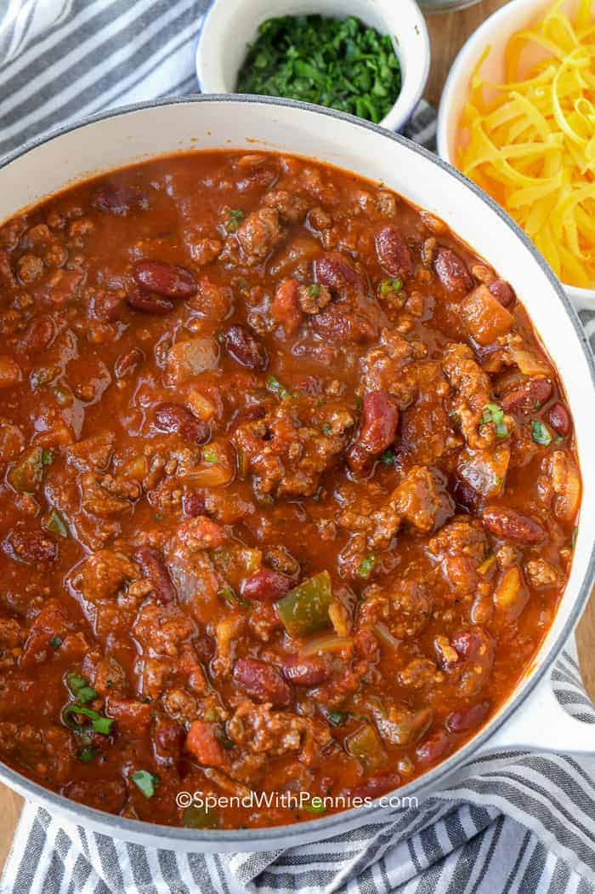

Chili Recipe

Description
The Best Chili Recipe is one that is loaded with beef and beans and absolutely full of flavor… just like this one! Chili is hands down one of my husbands favorite meals (and I love it because its easy to make)!
Ingredients
- Chili meat
- Beans: I use a combination of kidney beans and black beans for a nice texture and flavor.
- Sauce: To keep this sauce quick, I use pasta sauce or marinara sauce (its easy to make from scratch with crushed tomatoes and canned tomatoes if youd prefer). If using store-bought sauce, I love Raos for flavor.
- Seasonings: I use a blend of cumin, chili powder, paprika, and garlic powder to give the chili its signature taste.
Instructions
- Combine ground beef and 1 ½ tablespoons chili powder.
- In a large pot, brown ground beef, onion, jalapeno, and garlic. Drain any fat.
- Combine beans and sauce: Stir the beans and sauce together in a bowl.
- Simmer: Add the bean and sauce mixture to the pot with the browned beef and simmer for 20-30 minutes.
Home